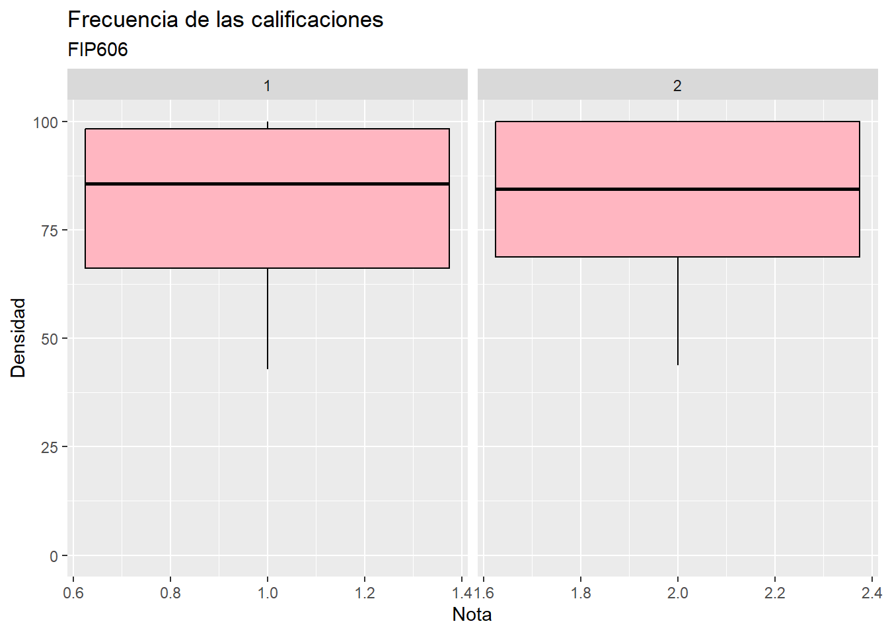
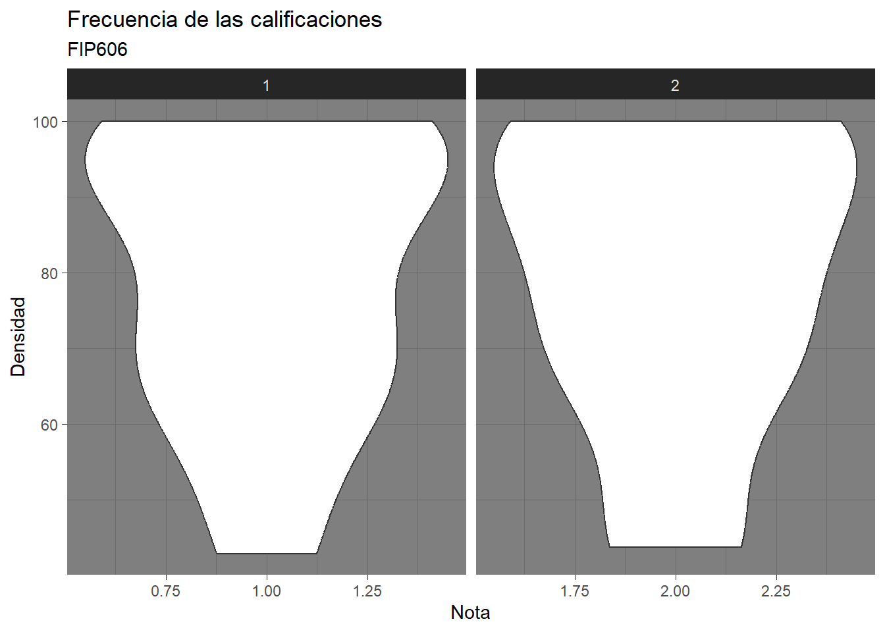
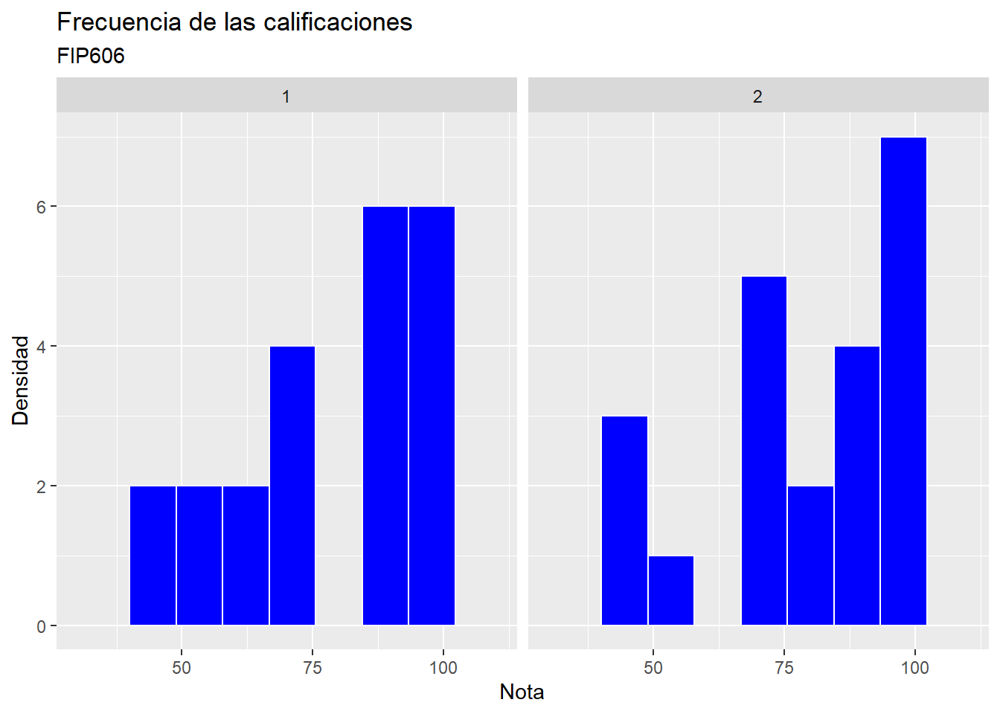

library (tidyverse)
library(ggplot2)
library(ggthemes)
library(dplyr)
library(gsheet)Aula5
Llamado de librerias
#A continuación se presentará una base de datos de las calificaciones que los estudiantes del cursos FIP 606 recibieron en las dos primeras pruebas cortas realizadas por el profesor Emerson Delponte
Datos <- gsheet2tbl("https://docs.google.com/spreadsheets/d/1bq2N19DcZdtax2fQW9OHSGMR0X2__Z9T/edit#gid=1092065531")#Vamos a realizar una visualizacion de los datos de manera general:
summary(Datos) prova pontos nota
Min. :1.0 Min. : 6.00 Min. : 42.90
1st Qu.:1.0 1st Qu.:10.00 1st Qu.: 68.75
Median :1.5 Median :12.50 Median : 85.70
Mean :1.5 Mean :11.91 Mean : 79.40
3rd Qu.:2.0 3rd Qu.:14.00 3rd Qu.:100.00
Max. :2.0 Max. :16.00 Max. :100.00 #Con esto, podemos entender que la nota menor es de 42.9, la mediana esta en 85.70, la media esta en 79.4 y hubieron pesonas con la calificacion mas alta.
#Primero visualicemos las diferencias entre la primera prueba y la segunda.
Datos|>
group_by(prova)|>
summarize(mean = mean(nota),
median =median(nota),
sd_mean= sd(nota),
minimo =min(nota),
max = max(nota))# A tibble: 2 × 6
prova mean median sd_mean minimo max
<dbl> <dbl> <dbl> <dbl> <dbl> <dbl>
1 1 79.5 85.7 19.0 42.9 100
2 2 79.3 84.4 19.7 43.8 100#Una vez comparadas, podemos entender que a vista de datos, no existe muchas diferencias entre los resultados de ambas pruebas.
#Ahora, con esto podemos darnos cuenta de que las calificaciones estuvieron en un promedio mayor a 70 (tomando en cuenta que la desviacion es de +-19 puntos), sin embargo visualizar los datos de manera grafica puede ayudarnos a entender.
Datos |>
ggplot(aes(prova,nota))+
geom_boxplot(color='black', fill='lightpink')+
ylim(0,100)+
labs(title= 'Frecuencia de las calificaciones',
subtitle = 'FIP606',
x= 'Nota',
y= 'Densidad')+
facet_wrap(~prova,scales = 'free_x')
#Observemos esto mismo en un grafico de violin
Datos|>
ggplot(aes(x= prova, y = nota))+
geom_violin()+
labs(title= 'Frecuencia de las calificaciones',
subtitle = 'FIP606',
x= 'Nota',
y= 'Densidad')+
theme_dark()+
facet_wrap(~prova,scales = 'free_x')
#Ahora, observemos las frecuencias de los datos para la primera y segunda prueba.
Datos|>
ggplot (aes(x = nota))+
geom_histogram(bins = 10,color="white", fill ="blue")+
labs(title= 'Frecuencia de las calificaciones',
subtitle = 'FIP606',
x= 'Nota',
y= 'Densidad')+
xlim(30,110)+
facet_wrap(~prova)
#Como podemos observar, el grupo con mayor frecuencia esta en el rango de la maxima calificacion.
#Ahora, para poder concluir este analisis, es importante saber cuantas calificaciones estan entre el rango de 70 a 100, por lo que con el siguiente codigo podemos hacerlo:
#Total de datos prueba 1: 22
#Total de datos prueba 2: 22
Calificaciones1 <- sum(Datos$nota[Datos$prova == 1] >= 70 & Datos$nota[Datos$prova == 1] <= 100)
Calificaciones2 <- sum(Datos$nota[Datos$prova == 2] >= 70 & Datos$nota[Datos$prova == 2] <= 100)
print('Cantidad de estudiantes que pasaron la prueba 1:')[1] "Cantidad de estudiantes que pasaron la prueba 1:"print(Calificaciones1)[1] 16print('Cantidad de estudiantes que pasaron la prueba 2:')[1] "Cantidad de estudiantes que pasaron la prueba 2:"print(Calificaciones2)[1] 13print("Porcentaje de estudiantes que pasaron la prueba 1:")[1] "Porcentaje de estudiantes que pasaron la prueba 1:"16/22*100[1] 72.72727print("Porcentaje de estudiantes que pasaron la prueba 2:")[1] "Porcentaje de estudiantes que pasaron la prueba 2:"13/22*100[1] 59.09091#Por lo tanto, podemos concluir que para ambas pruebas, mas de la mitad de estudiantes pasaron los examenes cortos.
#Los estudiantes que pasaron la segunda prueba son menos de los que pasaron la primera prueba.